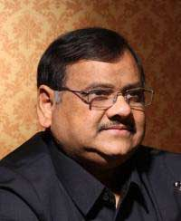
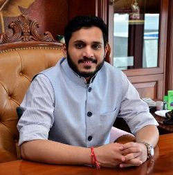

ABOUT BBDU
The university was established in the year 2010. BBDU Lucknow is a state level private university. Babu Banarasi Das University is recognised by the University Grants Commission (UGC) and offers undergraduate, postgraduate and Ph.D programmes. The university offers courses in the fields of Science, Commerce, Arts, Management, Engineering, Law, Pharmacy, Architecture, etc. The vision and mission of the university is to provide quality education to its students and nurture them into world class professionals. Babu Banarasi Das University strives to inculcate leadership and
FOUNDER

LATE DR. AKHILESH DAS GUPTA
MBA, LLB, Ph.D.
Ex-Member of Parliament (Rajya Sabha)
Hon'ble Founder Ex-Chairman, BBD Group
We not only make technocrats at BBD, we churn out citizens of the world, perfect in all respect, be it leadership, competence, confidence, communication, moral or knowlegde Akhilesh Das Gupta Vision.
A distinguished political leader, philanthropist, educationist and social worker, Dr. Akhilesh Das is the pride of Lucknow city. He has established himself as a worthy son of his illustrious father Late Babu Banarasi Das Ji.
PRESIDENT BBD GROUP

Mr. Viraj Sagar Das
B.A LL.B(Hons.), Advocate
President, BBD Group
Education is the most powerful weapon which you can use to change the world Nelson Mandela
Babu Banarasi Das University has its roots lying deep in quality education practices that equip each student with broad outlooks to prepare them for this futuristic world. We are committed to providing the education that fulfils the needs of today world. Today, education is not limited to textbook courses and its practical implementation. Education has been through a major transformation where apart from the syllabus, it has become imperative to inculcate some extra skills in the students so that they could truly succeed in their lives. We encourage our students to perform well in their academics and also to take active participation in all the co-curricular activities in order to develop interpersonal skills, take up challenges, be self-dependent and most importantly, have a good time while learning.
To quote Dr APJ Abdul Kalam, “Learning gives creativity, creativity leads to thinking, thinking provides knowledge, and knowledge makes you great”.
VICE CHANCELLOR BBD UNIVERSITY

Prof(Dr.) Arun Kumar Mittal
M.A., Ph.D., D.LITT, F.R.A.S. (LONDON)
Vice Chancellor, BBD University
Waters that cease to flow, stagnate
This saying has never been truer than it is today. This is because the times in which we live today stand on two key pillars: the pillars of globalization and growth. Both of these pillars are founded on a base structure of intense competition. As a result, the young generation of today faces various challenges in terms of securing their future and ensuring success in the path of life. It has become imperative for them to excel in their respective fields. Earlier they wanted to be the best but today they need to be better than the best!